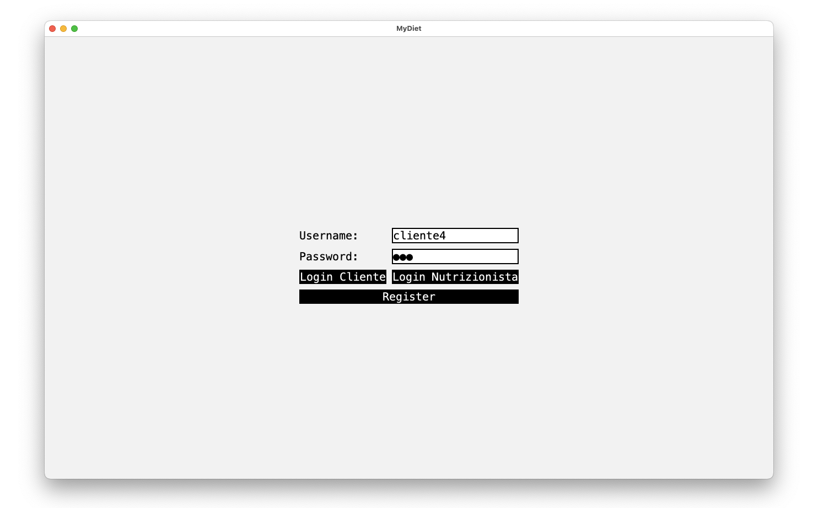

Descrizione del Progetto
MyDiet è un'applicazione Java progettata per aiutare gli utenti a tenere traccia delle calorie consumate e degli obiettivi nutrizionali giornalieri.
Le principali funzionalità includono:
- Gestione dei pasti e delle calorie
- Integrazione con un database MySQL per salvare i dati degli utenti
- Interfaccia grafica intuitiva basata su Java Swing
Tecnologie Utilizzate
Risultati e Feedback
Il progetto ha ricevuto un feedback positivo dagli utenti che hanno apprezzato la semplicità d'uso e l'efficacia nell'aiutarli a raggiungere i loro obiettivi nutrizionali.
Link repo: GitHub